Vincent van Gogh signed his paintings with just his first name, when he signed them at all. He said he disliked hearing his last name mispronounced, and that a signature was not needed anyway because everyone would know the work by how it looked. He was right. He was born in 1853 in Groot-Zundert in the rural south of the Netherlands, the son of a Protestant pastor, and before painting he failed at everything he tried. Six years as an art dealer with Goupil and Company, starting at 16, ended with him sacked, reportedly because his religious zeal was upsetting the customers. A stint as a schoolteacher in England went nowhere. An attempt to become a preacher like his father ended with a mission post among the miners of the Borinage in Belgium, who mostly laughed at him. At 27 he decided to become an artist, and his letters show no doubt at all that he would be a great one, whatever anyone said about the early work.
He taught himself the way the academies said you should, drawing before painting, working through all three volumes of Bargue's drawing course three times and copying engravings after Millet left over from his dealer days. In the ten years that followed he produced roughly 900 paintings, wrote about 900 letters, some 700 of them to his younger brother Theo, sold one painting that we know of, and died in 1890 at 37. The story is all there in the work if you walk through it in order. That is what this page does, in 33 paintings.
Sorrow
His first real mentor was Anton Mauve, a recognized painter of the Hague School who happened to be married to his cousin. They worked together for three weeks, starting with still life because, as one curator puts it, still life is cheap and very patient. Then Mauve stopped answering the door. Part of the reason was that Vincent had moved in with Sien Hoornik, a pregnant prostitute, which did not go over well in the family. She is the model for this drawing. He titled it in English, added a line from the French historian Michelet underneath, and thought at the time he might make a career in black and white as an illustrator. The unideal body, the despairing posture, and the bare setting are all deliberate. He was already trying to make the image itself carry feeling, and in companion drawings of gnarled tree roots from the same months he managed the same emotional charge with no figure at all. Hold that thought about roots until the end of this page.
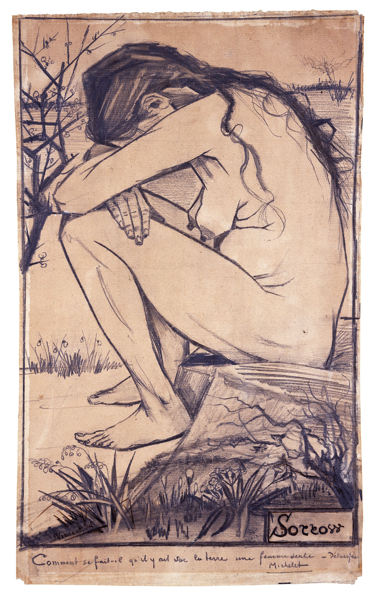
{kind=link}
Weaver
He moved back in with his parents in Nuenen and painted the people around him. The local weavers were among his first subjects: he made 28 compositions of them, admiring their hard work and their solitude. "More and more I find something touching and even heart-rending in these poor and obscure workers," he wrote, "I feel like a weaver when he sees his threads getting tangled." He was also reading Charles Blanc's grammar of the visual arts, his textbook for color theory, and you can see him applying the lesson: against the gray-green interior he gives the weaver a red cloth to weave, because complementary colors placed together make each other stronger.
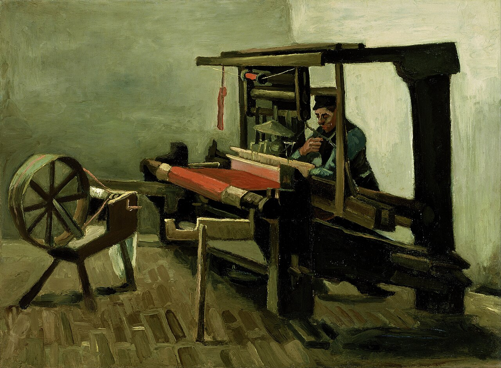
{kind=link}
Head of a peasant woman
Theo, by now a successful dealer in Paris, was paying his bills, first secretly through their parents and then directly, and he would remain Vincent's income for the rest of his life. Vincent was grateful and also irked: "You have never ever sold one single painting of mine, either for much or for little, and in fact you haven't even tried." He kept sending Theo studies like this one, heads of the peasants around Nuenen, and Theo kept writing back that they were too dark and that he should go look at some paintings. A trip to Amsterdam to see Frans Hals did the trick. Standing in front of orange set against blue he wrote, "Presently my palette is thawing." Hals also planted an idea he never let go of: portraits of individuals who also stand for a whole social type, a merry drinker, a postman, an Italian woman in Paris.
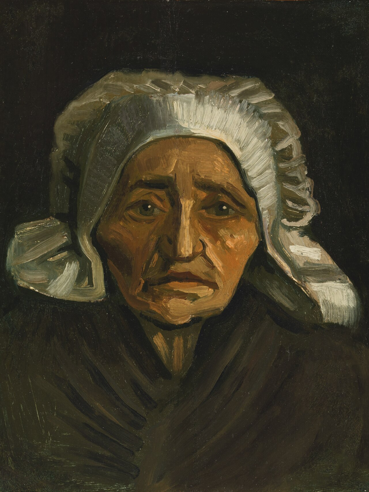
{kind=link}
The Potato Eaters
The Potato Eaters, from April 1885, was his deliberate showpiece, the painting meant to prove he was on his way. At two by four feet it was large for him, took a month, and needed more preparatory studies than anything he had done. He wrote about it more than any other painting he made. The darkness is not a failure of nerve but color theory turned inward: instead of setting reds and greens side by side he mixed them into what he called coloristic grays. And the coarseness is the subject. "My great longing is to learn to make incorrectnesses, changes in reality, so that they may become, yes, lies if you like, but truer than the literal truth." He wanted the people to look like they had dug the earth with the same hands they put in the dish, to look, in one lecturer's word, potatoey.

.jpg){kind=link}
Skull with a burning cigarette
He enrolled at the academy in Antwerp that winter, clashed with his instructors, and left little that survives. This small canvas is the famous exception, probably a joke at the expense of academic training, which had students copy skeletons endlessly. It is the first painting of his that feels like a personality rather than a program, and it is the last thing he made before the education that actually changed him, which was not a school.

{kind=link}
Imperial fritillaries in a copper vase
In March 1886 he showed up in Paris without warning, sending Theo a note at the gallery that said, in effect, meet me at the Louvre. Theo had a one bedroom apartment, so they moved to Montmartre and lived together for two years. The timing could not have been better. 1886 was the year of the final impressionist exhibition, and Vincent went and saw Seurat, Signac, Degas, and Monet. Within a year his still lifes went from brown pots in brown rooms to this. Two practical forces helped: new industrial pigments were arriving, and John Goffe Rand had invented the squeezable metal paint tube that made them portable. Flowers were his subject of choice because Paris flower markets sold off the day's leftovers for almost nothing, flowers are patient sitters, and a Dutchman surrounded by flowers feels at home. Look at the background dots and the dashed tabletop: he is trying on pointillism, not as doctrine but as one more mark to add to his kit.
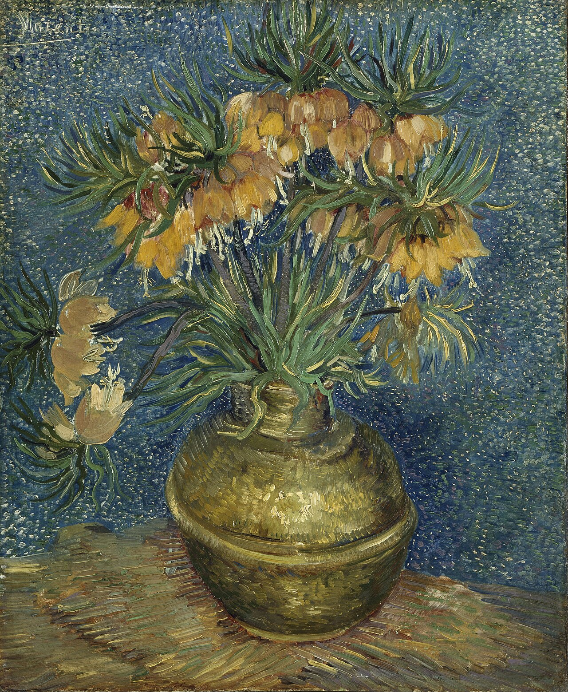
{kind=link}
Agostina Segatori in Le Tambourin
Once he had friends he had models, because friends sit for free. Agostina Segatori owned the Cafe du Tambourin, an artists' hangout where the tables and stools were shaped like tambourines, and the two of them seem to have had a brief relationship. He paints her in her own cafe, two beers in, counted by the saucers under her glass, cigarette going, which was scandalous behavior for respectable ladies and normal behavior for liberated artistic types. Showing a person in their characteristic setting doing their characteristic thing was the modern portrait formula of the 1880s, and Vincent picked it up directly from the circle around Degas and Toulouse-Lautrec. He also mounted small exhibitions on the cafe's walls, of his own paintings and of Japanese prints, which brings us to the next picture.
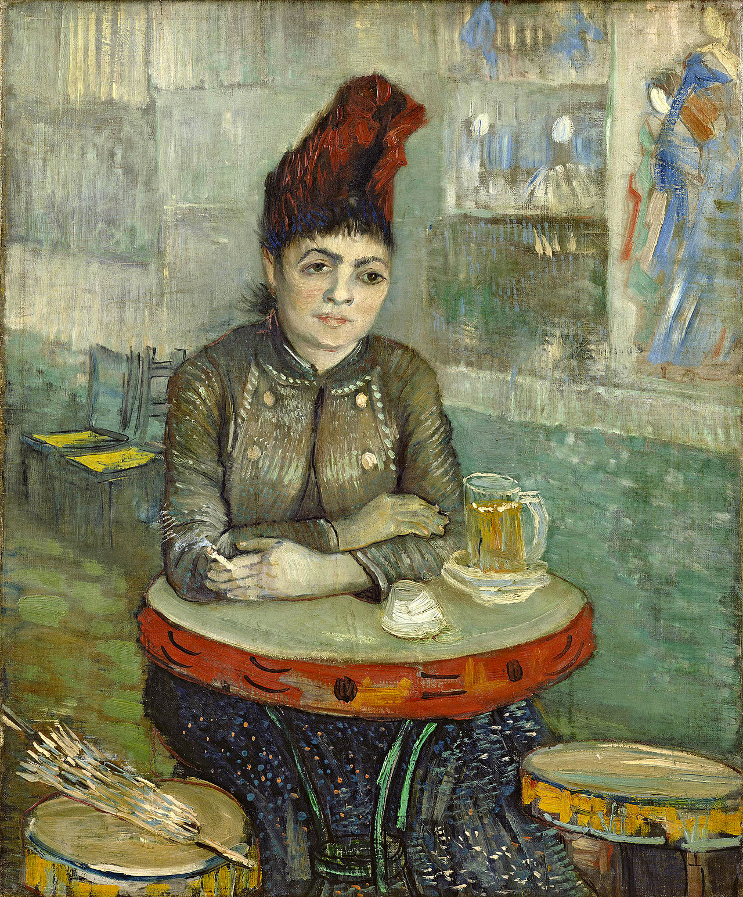
{kind=link}
Flowering plum orchard, after Hiroshige
Japanese woodblock prints had entered Europe partly as wrapping paper for porcelain. In Japan they were cheap mass-produced images of actors, courtesans, and famous views; in Paris the avant-garde saw flat unmodulated color, strong outlines, and radical cropping, and lost its mind. Vincent and Theo collected the prints by the hundreds, and Vincent copied them the way he had once copied Millet. His canvas was the wrong shape for Hiroshige's print, so he invented the orange side panels to crop the space and filled them with borrowed characters. He saw nothing embarrassing in copying and described himself as a musician playing a composition written by someone else. The prints taught him bold flat color and calligraphic line, and they gave him a fantasy: that Japanese artists lived simply in colonies, making art together.
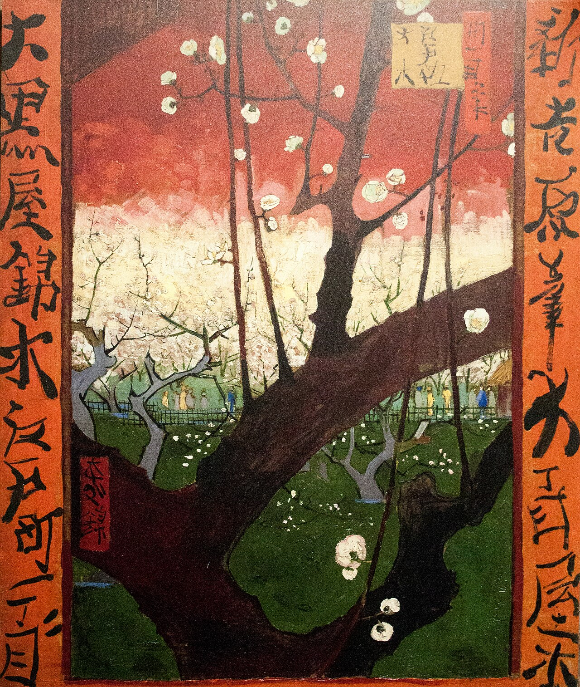
{kind=link}
The Italian woman
He painted Agostina again, and the difference between the two portraits is the whole Paris education in one before-and-after. The setting is gone, the background is flat yellow, the color is no longer naturalistic, and pattern has taken over, in her garment, in the painted half-frame that throws the composition off balance, even in the basket-weave way the yellow background is brushed. She is still herself, and she is also a type, the Italian woman in Paris, exactly the Frans Hals idea filtered through Japanese prints. If you stop trying to work out how her body sits under all that patterning and just take it as color, it works.
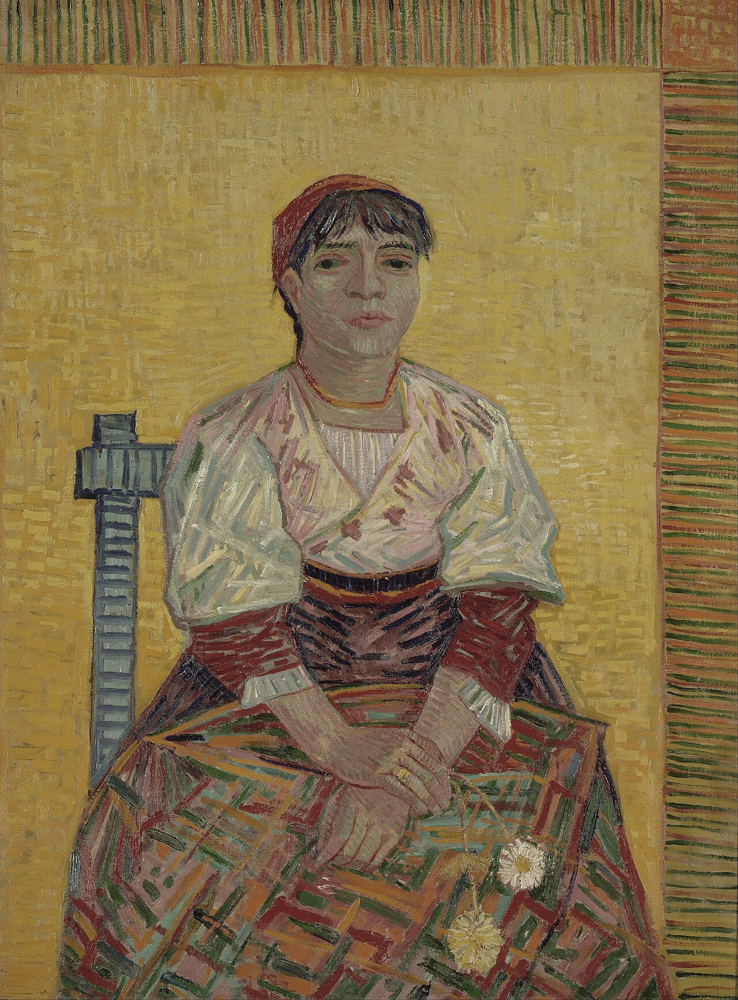
{kind=link}
Pere Tanguy
Julien Tanguy ran the paint shop where Vincent bought his materials, and like many color merchants he accepted paintings in payment, which made his back room an unofficial gallery where artists went to see each other's work. Vincent painted him three times, always fondly, and here sat him in front of the shop's stock of Japanese prints, a portrait of a man made out of the things he sold. When Vincent left Paris he stored canvases with Tanguy, and it was in that shop, in November 1887, that he met Paul Gauguin and swapped two sunflower paintings for one of Gauguin's Martinique canvases. Remember that trade.
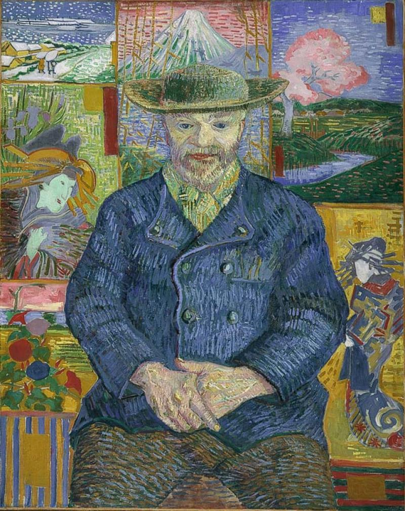
{kind=link}
Self-portrait with grey felt hat
Too poor to pay models before the friendships formed, he painted himself more than twenty times in Paris. This one from the winter of 1887 to 1888 shows him bending pointillism to his own ends, with strokes that radiate around the head instead of sitting in a neutral grid. Paris had rebuilt him as a painter and was wrecking him as a person. Theo's friends stopped visiting the apartment because Vincent picked fights with everyone, and by his own account he was close to alcoholic by the time he left. He knew city life was not for him. He wanted the south, which in his head was the nearest available Japan.

{kind=link}
The Sower
In February 1888 he took the train to Arles, and everything he had absorbed fused into the style you know: impressionist color, divisionist brushwork, Japanese flatness and line, and underneath it all the subjects he had loved since Nuenen. This is Millet's Sower again, the same figure he had copied as a beginner in 1880, now given an enormous setting and a sun like a halo of chrome yellow. The sower mattered to him as the parable of the sower, seed falling on good and bad ground. A former preacher who had decided never to paint Bible scenes outright could still choose subjects with that kind of meaning built in, and he did for the rest of his life. Once something entered his head it never left; it just came back transformed.
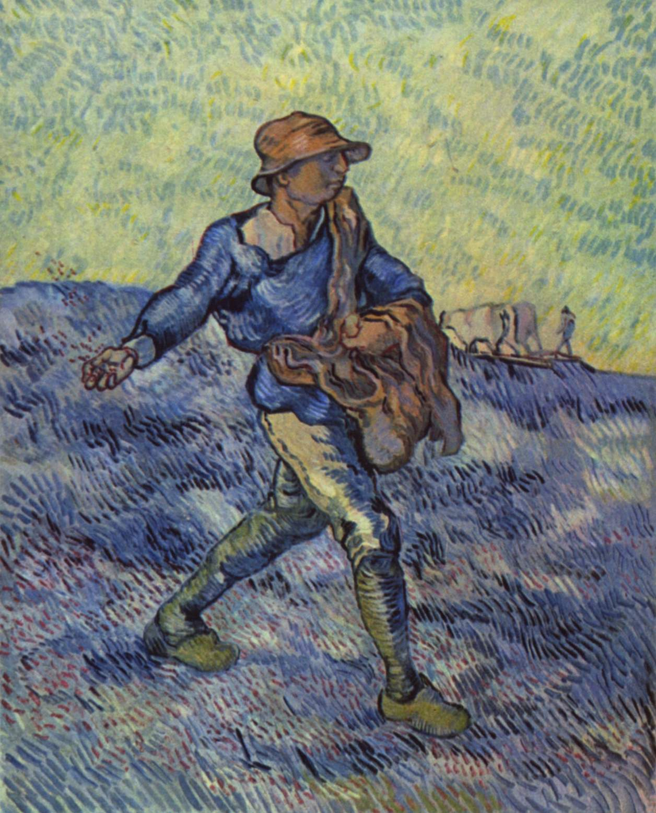
{kind=link}
Sunflowers
The plan for Arles was a colony, a "studio of the south" where artists would live and work together like his imagined Japanese brotherhood. Nobody would come. So Theo made Gauguin an offer: free lodging with Vincent in exchange for one painting a month, and Gauguin, who owed Theo for selling his work, agreed. Vincent was so excited he bought up yellow paint and made the sunflower series to decorate the guest room, yellow on yellow on yellow, a technical dare as much as a decoration, with sunflowers already tied to Gauguin in his mind by that trade at Tanguy's shop. Look closely and most of the flowers are dead or dying, dry seed heads with the petals gone. A Dutchman painting flowers inherits the 17th century tradition where blooms remind you that you will die, and the seed heads carry the answering thought, since each one holds next spring's sunflowers.

{kind=link}
The postman Joseph Roulin
While he waited for Gauguin he worked on his other great ambition, portraits of the types of Provence, their customs and temperament. "I always feel confidence when doing portraits," he wrote, "it enables me to cultivate what's best and most serious in me." Joseph Roulin handled the mail at the Arles train station, lived near the Yellow House, and became Vincent's closest friend and drinking companion in town. Payment for sitting was usually beer. Vincent painted him the day after Roulin's wife gave birth and described him as being in fine feather, which the puffed chest confirms. The blue-on-blue tonality is his Frans Hals homage: one color family, one man, one whole class of men.
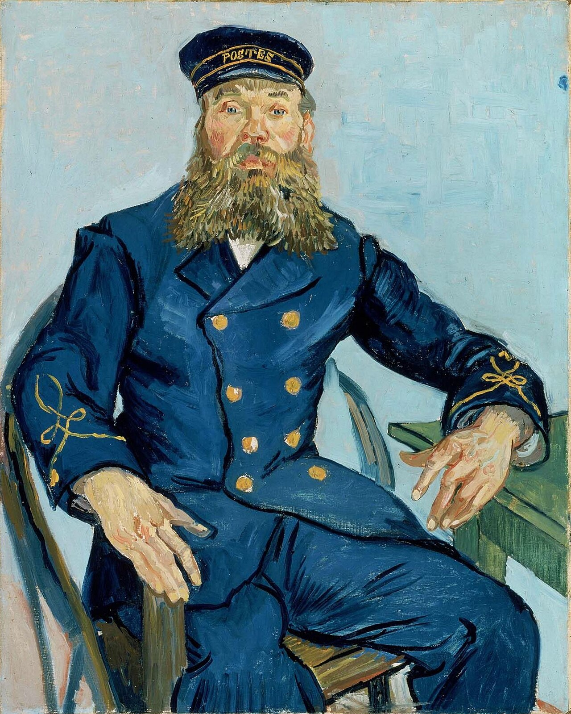
{kind=link}
Eugene Boch
He also wanted to paint the creative type, and wrote out the recipe in advance: "I should like to paint the portrait of a fellow artist who dreams great dreams. Behind the head, I paint infinity, a plain background of the richest, most intense blue." He had been reading Carlyle on heroes, where Dante is described as having an infinitude in him, and thought Gauguin's nose looked like Dante's. Gauguin was not there yet, so he used what he had: Eugene Boch, a Belgian painter passing through, whose face, he noted, resembled a razor blade. No brushes, no palette, no hands in the picture, just a mind and a starfield. He had started writing about stars that summer as the destination after this life, and this blue is the first time the thought reached canvas. Keep Boch's surname in mind too; his sister enters this story later.
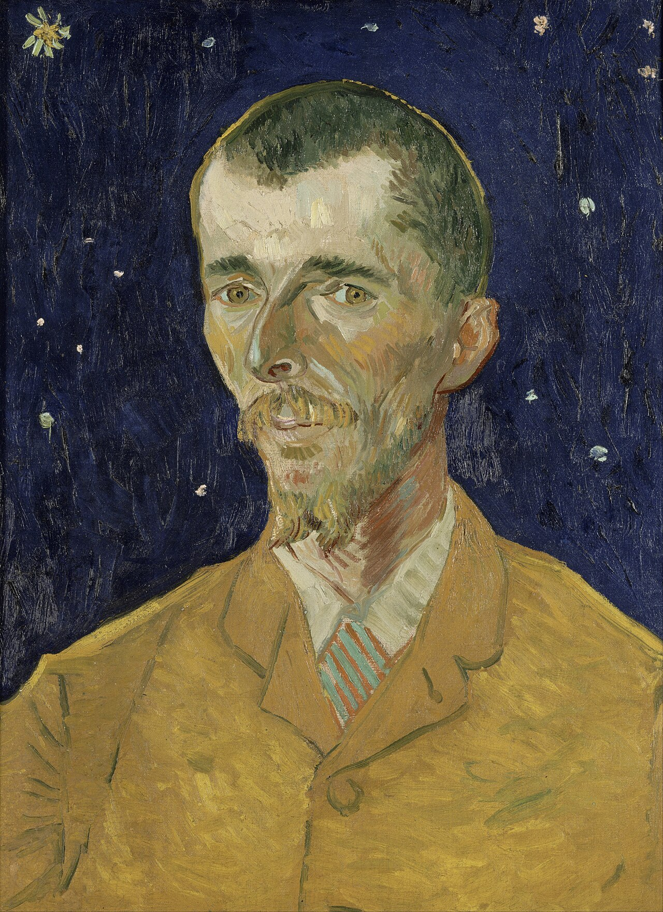
{kind=link}
Cafe Terrace at Night
His first night sky painted on site, in September 1888 on the Place du Forum, without using any black. He wrote to his sister Willemien that night is "more richly colored than the day." The cafe still exists and trades on the painting.

{kind=link}
Starry Night over the Rhone
The same month he took the star idea outdoors and painted the gaslit quay at Arles under the Great Bear. The letter that explains it is the one people quote at his grave: "Just as we take the train to get to Tarascon or Rouen, we take death to reach a star. While we are alive we cannot get to a star, any more than when we are dead we can take the train." For him a starry sky was not scenery. It was the map of somewhere he expected to go.

{kind=link}
The Night Cafe
Complementary colors, he liked to say, are like couples. Some couples bring out the best in each other; you know that couple. Some make each other worse; you know that couple too. The Night Cafe is the bad couple, red and green at war across a room where the floor tilts up at you and the pool table looks ready to slide off it. His description to Theo leaves no doubt it was intentional: "I have tried to express the terrible passions of humanity by means of red and green... an atmosphere like a devil's furnace, a place where one can ruin oneself, go mad, or commit a crime." He considered it one of the ugliest and best things he had done.
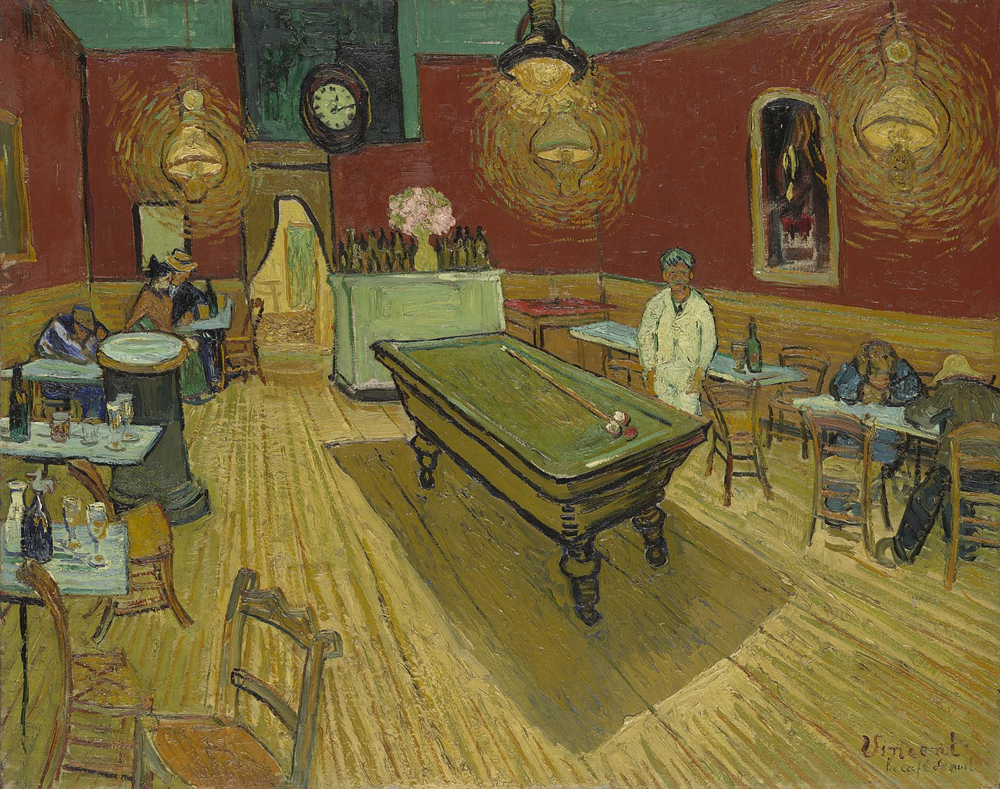
{kind=link}
Self-portrait dedicated to Gauguin
Before moving in together, the two artists exchanged self-portraits. It was a brutally hot September, so Vincent shaved his head, decided the result made him look like a monk, and ran with it: he had been reading Loti's Madame Chrysantheme with its Japanese bonzes, and painted himself as a monk-artist, a simple worshipper of the eternal Buddha, gaunt because he was spending Theo's money on paint instead of food. Gauguin sent back a self-portrait as Jean Valjean, the noble outlaw. Two men who had each cast himself as the hero of a novel were about to share a very small house.

{kind=link}
The Bedroom
His own room in the Yellow House, painted in October 1888 while he waited. He told Theo the flat planes of color were meant to express rest, and he liked the composition enough to repeat it twice more; this is the first version. The walls were originally violet and have shifted toward blue because the red component of the pigment faded. Several of the new industrial reds he loved were fugitive, a problem conservators keep finding across his late work: some of what we see today is quieter than what he painted.

{kind=link}
The Yellow House
Gauguin arrived on 23 October 1888 and lasted nine weeks. They drank, went to the brothel, and painted the same sitters side by side, but their methods clashed at the root. Gauguin painted from imagination and pushed Vincent to do the same; Vincent needed the thing in front of him. By late December it became what one lecturer calls a perfect storm. They had been arguing constantly, the local paper was full of a murder case, Gauguin kept talking about leaving for the tropics, and a letter arrived saying Theo had proposed to a woman in Paris, which put Vincent's one reliable support in question. On the night of 23 December Vincent cut off part of his left ear, wrapped it, and delivered it at 11:30 pm to a woman named Rachel at the brothel. The police found him in the morning barely alive. The only source for the story that he had first threatened Gauguin with a razor is Gauguin, who was the one who left and had reasons to tell it that way.

.jpg){kind=link}
Self-portrait with bandaged ear
Painted a few weeks later, back at his easel in the Yellow House, in a winter coat and fur cap with a Japanese print on the wall behind him. The painting reads as a statement that he was still working. Gauguin never saw him again, though the two kept writing warmly for the rest of Vincent's life, still swapping paintings by mail. Joseph Roulin watched the house while Vincent was in the hospital, and Vincent thanked him the way he thanked everyone, with a portrait. Within months the neighbors of Arles petitioned to have him confined.

{kind=link}
La Berceuse
The picture he was working on when the crisis hit, and returned to after the hospital, was of Augustine Roulin, the postman's wife, holding the rope that rocked her baby's cradle. He and Gauguin had been talking about Icelandic fishermen, alone and exposed on the sad sea, and the idea came to him of a picture that sailors in a boat's cabin could look at and feel rocked, remembering their own lullabies. She is his neighbor and, once again, a type: she who rocks the cradle, consolation itself. He painted five versions and imagined hanging one between two sunflower canvases like a candelabra, painting as furniture for the soul. She kept one. Gauguin asked for one too, which tells you the friendship survived the ear.
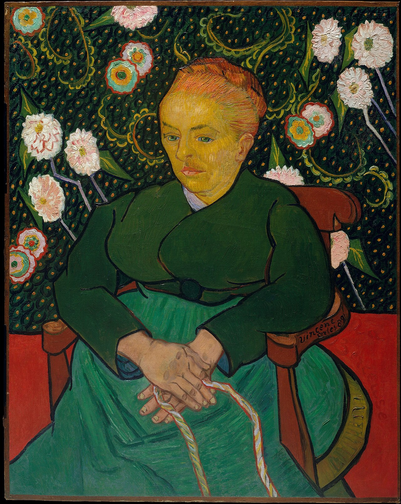
.jpg){kind=link}
Irises
In May 1889 he committed himself voluntarily to the asylum of Saint-Paul-de-Mausole in Saint-Remy. He was suffering hallucinations and blackouts and said so plainly, diagnosing himself without drama. When he was lucid he painted, in the walled garden or out in the fields with a staff member along, easel strapped to his back. Irises came out of his first week there. In 1987 it sold at auction for 53.9 million dollars, at the time the highest price ever paid for any painting. He never knew a market like that existed for him.

.jpg){kind=link}
The Starry Night
June 1889 was one epic campaign: this, the two cypress paintings below, and more, all inside a few weeks. The Starry Night was painted partly from the view through his barred window and partly from memory. The village is invented, the church spire is more Dutch than Provencal, and the cypress is enlarged into a green flame connecting the ground to the sky. Everything he had been circling for a year converges here: the stars as the far shore, the cypress as the cemetery tree, death as the train you take to reach a star. He had also loved old Dutch and Barbizon pictures of huge skies over tiny villages since his dealer days, and this is that memory too. He judged it a failure, an abstraction pushed too far. It is now the most reproduced painting he made.

{kind=link}
Cypresses
"The cypresses still preoccupy me," he wrote to Theo on 25 June 1889. "I'd like to do something with them like the canvases of the sunflowers, because it astonishes me that no one has yet done them as I see them. Beautiful as regards lines and proportions, like an Egyptian obelisk. The dark patch in a sun-drenched landscape." Technical studies at the Met show these were not fits of spontaneous outpouring; he considered and reconsidered, reworked and repeated, the same trademark stubbornness he had applied to the Potato Eaters. He also lectured Gauguin by mail that if you are going to paint Christ in the garden of olives you should first go look at an actual olive tree. Nature first, always.
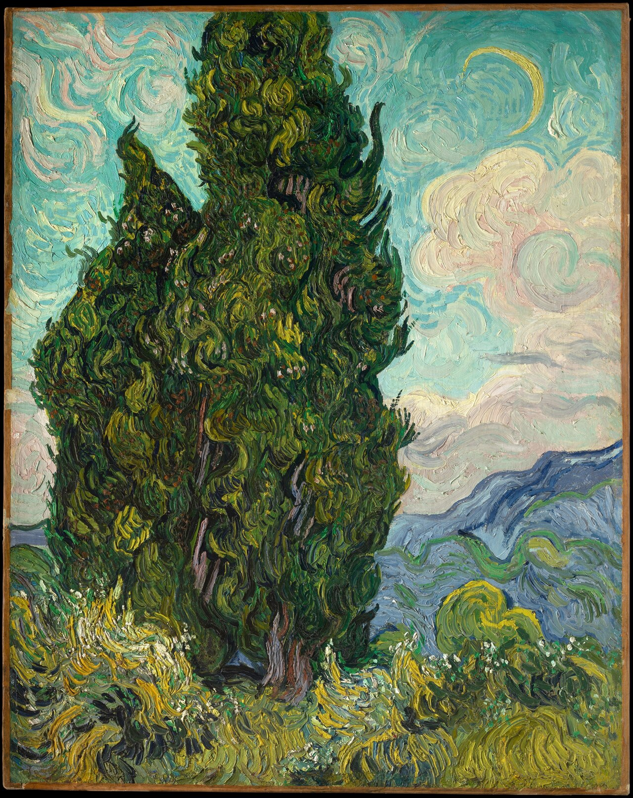
{kind=link}
Wheat field with cypresses
The companion piece from the same June campaign, the obelisk now standing in the sun-drenched wheat exactly as the letter describes. He liked this composition enough to repeat it twice from the first version, just as he had done with the Bedroom and the sunflowers. Repetition was never laziness for him. It was how he decided what a picture finally was.
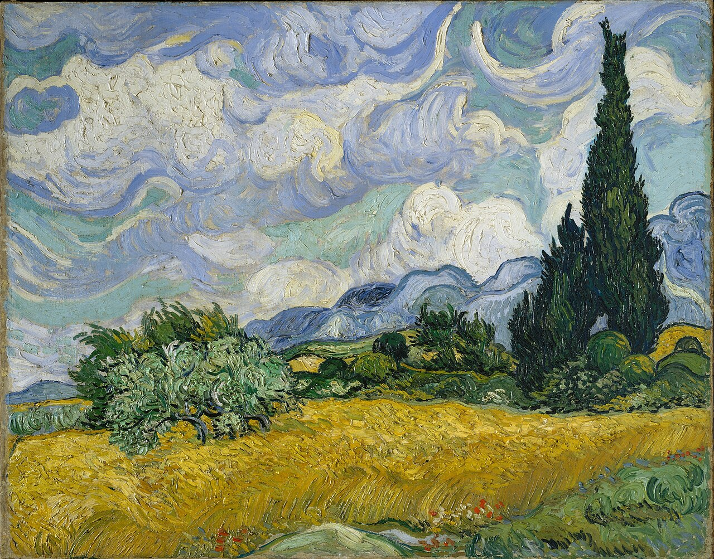
-Vincent-van-Gogh-Met.jpg){kind=link}
Two crabs
A small still life from his recovery, and a reminder that Japan never left him. Crabs are a stock subject of the woodblock print masters he collected, and painting one upside down and one right side up on a field of green is the print aesthetic translated into thick oil. A National Gallery lecturer tells of a Japanese art student assigned to reinterpret this picture who presented a sheet of green paper with two live crabs walking on it, explained that Vincent had already done everything else, and, asked what she would do with the crabs afterward, answered: eat them.
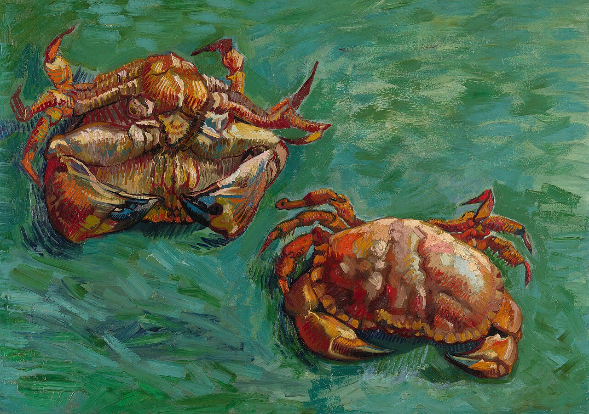
.jpg){kind=link}
The Red Vineyard
Recognition arrived in his last year, and it is a myth that it never came. He was invited to exhibit with Les Vingt in Brussels in January 1890 and given four meters of wall, an honor other artists fought for. Toulouse-Lautrec started an actual fight there with a critic who insulted the work. The same month Albert Aurier published the first serious article on him, praising a terrible, maddened genius, often sublime, sometimes grotesque. Vincent's only real objection was the title, which cast him as "the isolated one." He had wanted a brotherhood all his life; isolation was the last thing he wished to be famous for. In the spring Theo relayed that Monet had called his paintings the best in a Paris exhibition. And at Brussels this canvas, painted in Arles in November 1888, sold for 400 francs, the one documented sale of his lifetime. The buyer was the painter Anna Boch, sister of Eugene Boch, the razor-faced poet with infinity behind his head.
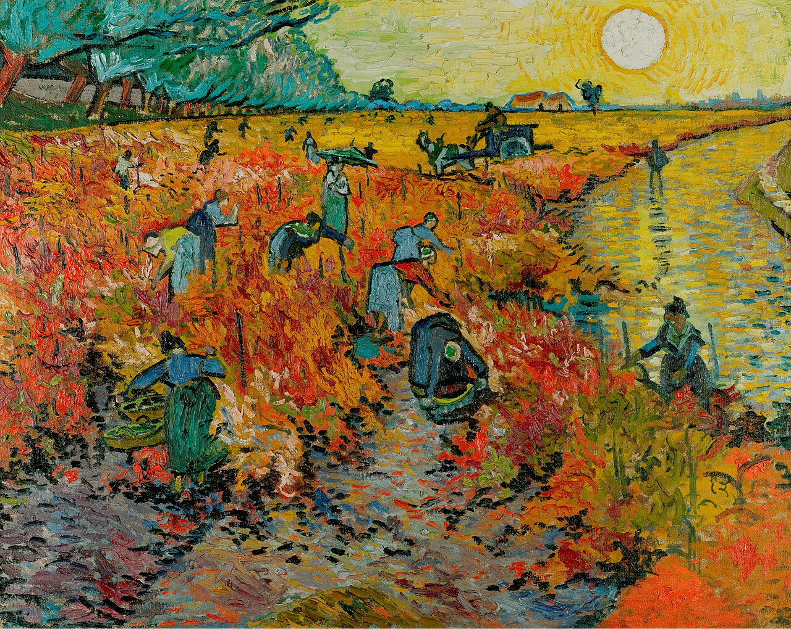
.jpg){kind=link}
Almond Blossom
Also in January 1890, Theo's son was born and named Vincent Willem after his uncle. Van Gogh painted this branch of almond blossom against a sky blue background to hang above the baby's bed. Almond trees flower earliest in Provence, so the picture is about a new life arriving before spring, painted in his most Japanese manner as a gift for the person who would one day found the museum that holds it.

{kind=link}
Portrait of Dr. Gachet
He checked himself out of the asylum in May 1890, tired of being isolated, and moved to Auvers, close enough to Paris to see Theo but out of the city, under the care of Dr. Paul Gachet, a homeopathic doctor, amateur painter, and collector who treated artists. Vincent described his own condition as "a melancholic aversion to life" and was delighted that Gachet had red hair like his; he joked they were a brotherhood of redheads. Still chasing brotherhoods, to the end. In his last 70 days he painted around 70 canvases. He painted Gachet in June with what he called "the heartbroken expression of our time." In 1990 the portrait sold for 82.5 million dollars, again a world record.

{kind=link}
Wheatfield with Crows
In his final month he painted more than a dozen canvases in an unusual double square format, wide and low. This is the most famous of them and is often called his last painting, which is probably wrong, but the myth stuck because everything in it reads as an ending: a storm sky, three paths that resolve nothing, crows over the wheat. He wrote that these fields expressed "sadness and extreme loneliness," and also, in the same weeks, that the country air was doing him good. Both sentences are true of the same man at the same time, which is the hardest thing about his story.

{kind=link}
Tree Roots
The family believed the actual last painting was this one, a tangle of gnarled trunks and roots in colored sand, abstract enough that it takes a moment to read. If it is the last, the career closes exactly where it opened: in The Hague in 1882 he had drawn twisted roots to carry the same feeling as the woman called Sorrow, struggle and clinging expressed through nature alone. Eight years later, with everything he had learned in between, he did it again.
On 27 July 1890 he went out to the fields, set his easel against a haystack, and shot himself in the chest. He died two days later with Theo at his side. Emile Bernard, who rushed from Paris for the funeral, described the room: Vincent's last canvases nailed to the walls around the coffin like a halo, sunflowers and yellow flowers laid on it because he had loved them as a symbol of the light he dreamed of, his easel, folding stool, and brushes set on the floor beside the coffin. Dr. Gachet tried to give a eulogy and wept too much to finish. Theo, broken, died six months later, and the brothers are buried side by side in Auvers. It was Theo's widow, Jo van Gogh-Bonger, who spent the next three decades publishing the letters and placing the paintings until the world caught up.
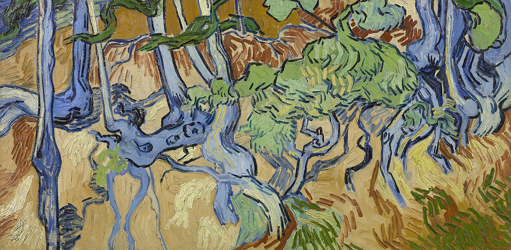
{kind=link}
Sources
Narrative drawn from three museum talks: Katie Hanson's career survey at the MFA Boston, a National Gallery talk on the Sunflowers, and the Met's technical lecture on the cypress paintings, plus Van Gogh's letters as quoted in them. All images are public domain, from Wikimedia Commons, hosted with this post.